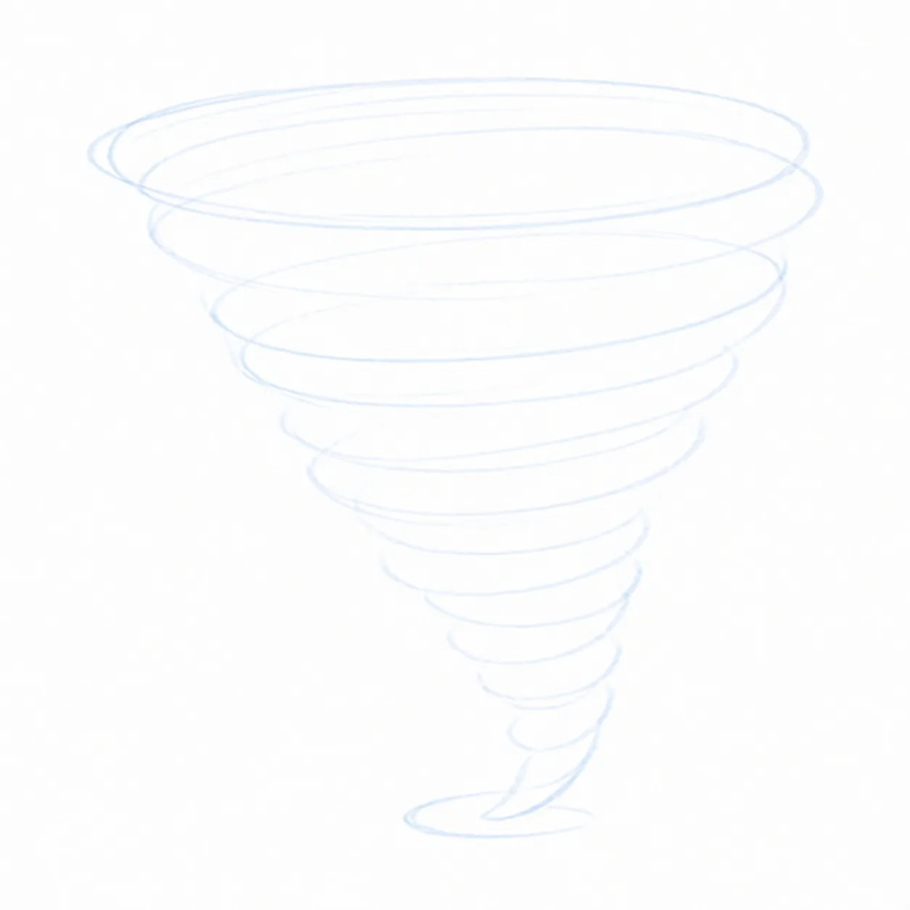
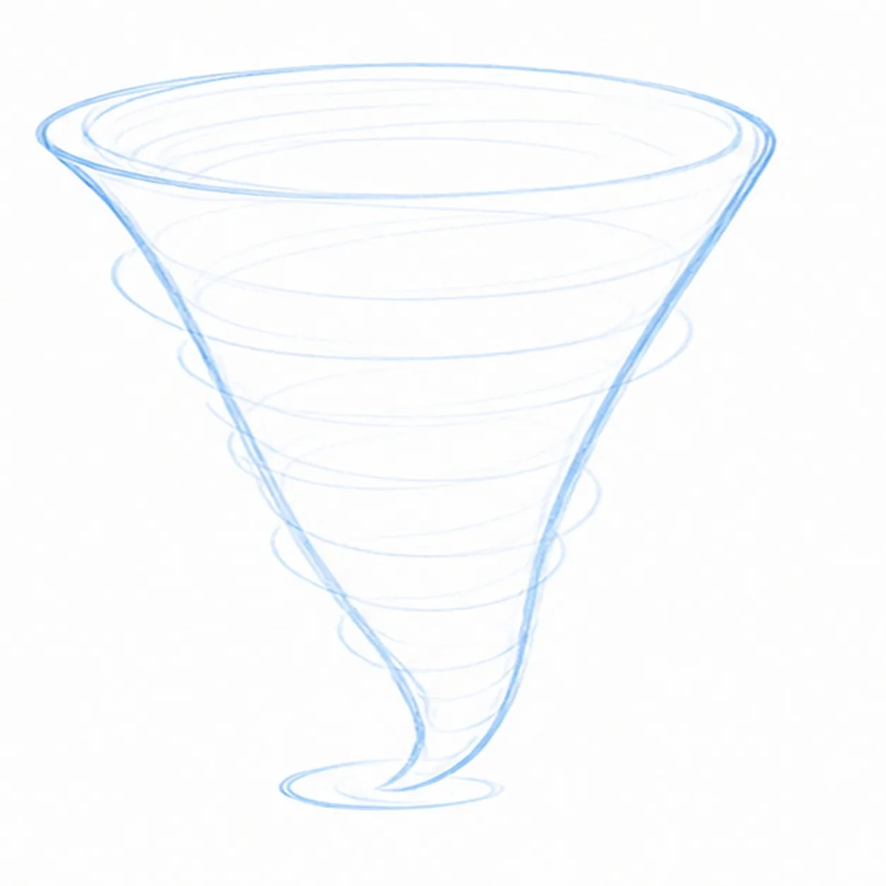
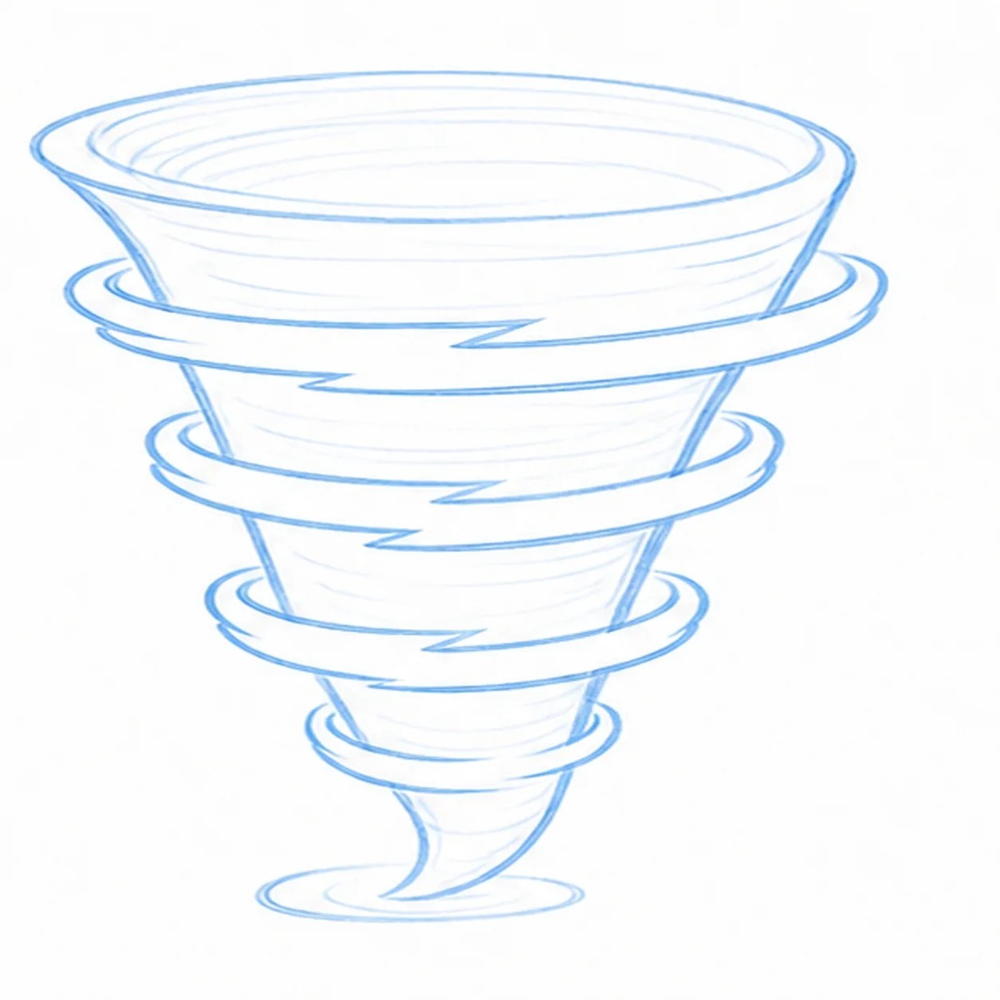
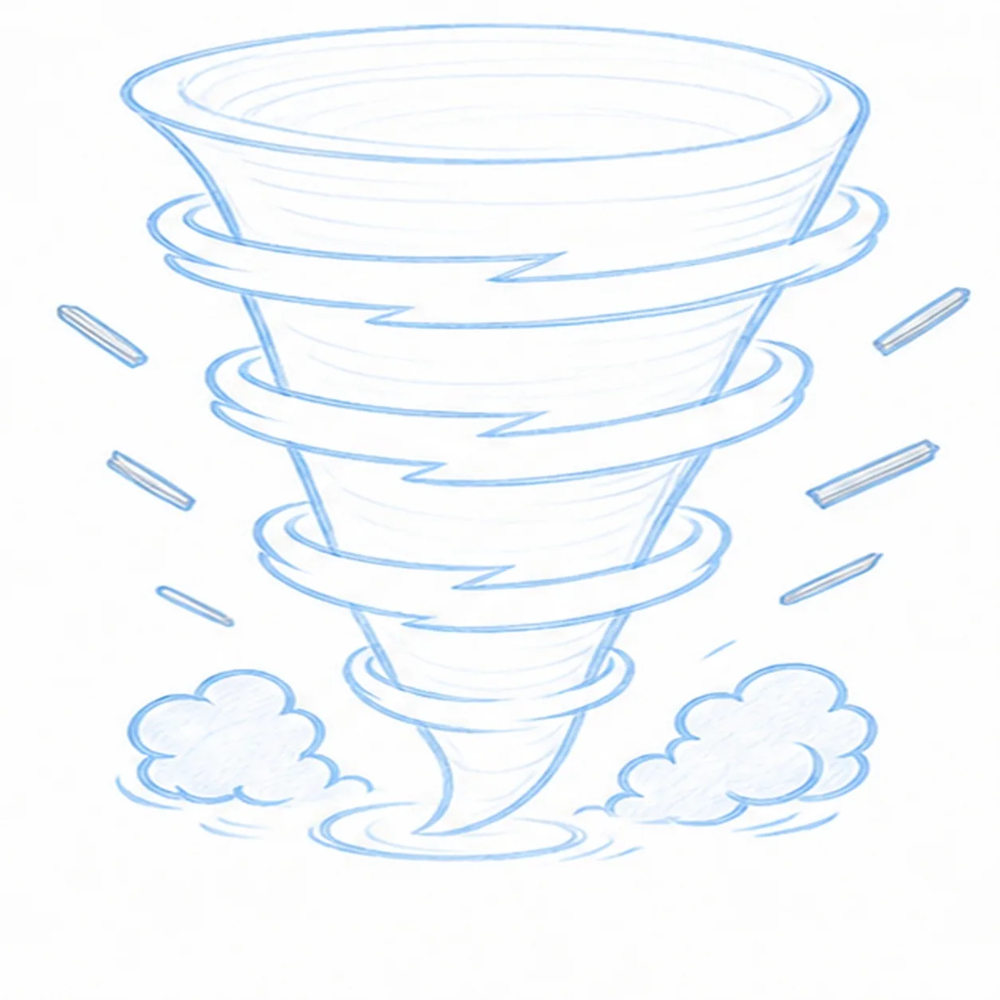
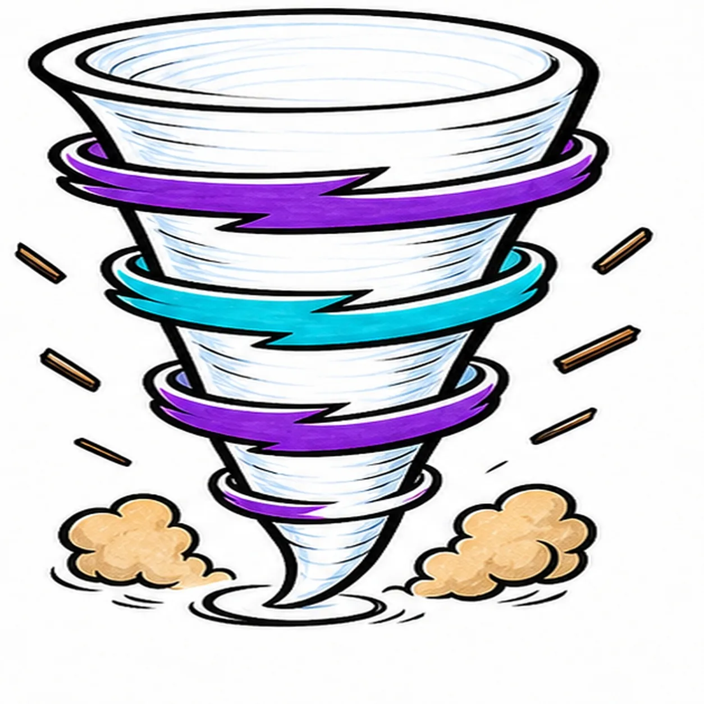

Felt-tip marker mode
Let's draw a comic tornado swirl
Treat this as one playful practice round: sketch the idea loosely, simplify the shapes, then commit with confident marker outlines and bright fills.
-
01

Spin the funnel guide
Draw one light tapered corkscrew gesture that opens wide at the top and narrows into a small oval ground footprint.
Doodle tip: Ghost the whole spiral before touching down. Let each turn shrink gradually so the funnel feels continuous instead of stacked from separate rings.
-
02

Shape the tornado cone
Wrap two energetic outer curves around the guide to build a wide curled top, narrow base, and grounded tip.
Doodle tip: Draw each side from top to bottom in one relaxed pass. Compare the white space on both sides of the spiral so the cone stays balanced but still handmade.
-
03

Wrap the wind bands
Add four curved wind bands across the existing cone, breaking the rear lines wherever the front arcs overlap.
Doodle tip: Place the band crossings before darkening their edges. Clean line breaks make the bands turn around the funnel without drawing hidden sections underneath them.
-
04

Kick up dust and debris
Add two rounded dust puffs around the established base and six short debris strokes beside the existing bands.
Doodle tip: Keep the dust low and aim the six little debris marks along the tornado's spin. Count them once before moving on so the final frames stay consistent.
-
05

Ink and color the spin
Thicken the established funnel, bands, dust, and debris, then fill the bands purple, cyan, purple, and purple from top to bottom and the dust puffs tan.
Doodle tip: Leave white gaps between the colored bands and pull your marker strokes around the funnel. The visible streaks should reinforce the circular motion.
-
06

Whirl the finish
Strengthen the existing outlines, overlap breaks, marker fills, dust edges, and six debris strokes.
Doodle tip: Check for four wrapped bands, two dust puffs, and six debris marks, then stop. A face, words, landscape, border, or extra weather symbol would only compete with the motion.